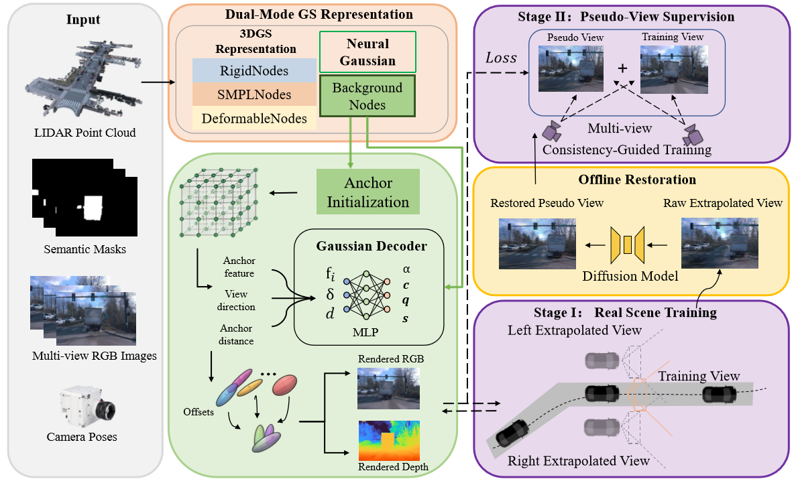
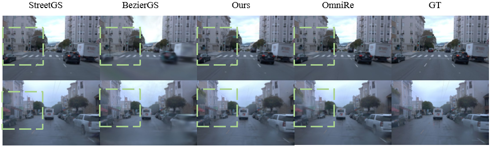
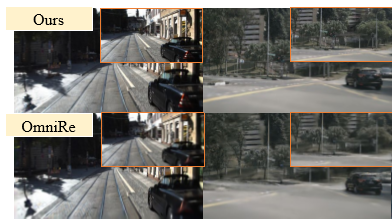
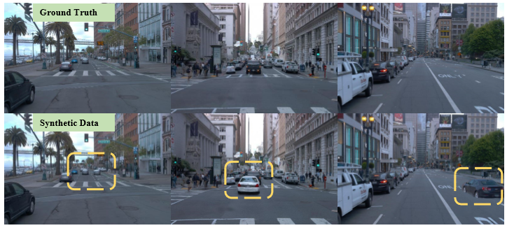
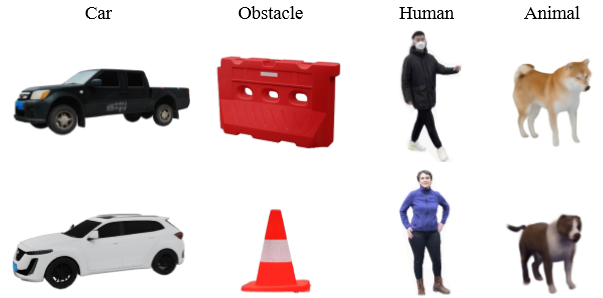
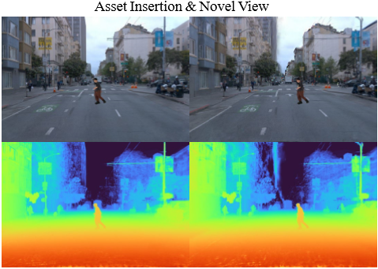
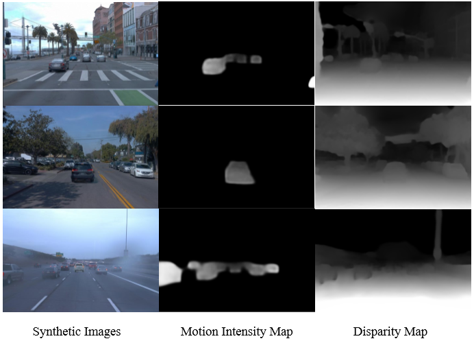

Editable foreground
Rigid actors, humans, and deformable objects keep explicit 3D Gaussian nodes for object-level control.
Scene Reconstruction And Data Synthesis
D2Recon reconstructs large-scale urban driving scenes with explicit editable foreground Gaussians, compact neural Gaussian background anchors, and diffusion-restored pseudo-view supervision.
Tongji University
Overview
D2Recon combines editable explicit foreground Gaussians with compact neural background anchors. A stable first-stage reconstruction renders lateral pseudo-views, which are restored offline and reinjected as lower-weight second-stage supervision.

Rigid actors, humans, and deformable objects keep explicit 3D Gaussian nodes for object-level control.
Static street structure is modeled by neural Gaussian anchors, reducing redundant background primitives.
Diffusion-restored extrapolated views improve weakly observed regions while limiting hallucination impact.
Qualitative Results
Figures are shown as full-width image panels rather than embedded PDFs, so the visual results remain clean, borderless, and easy to inspect.


Quantitative Results
Numerical results are grouped by question: overall gains, dataset-level rendering quality, and component-level ablation.
| Method | PSNR | SSIM | LPIPS |
|---|---|---|---|
| StreetGS | 31.96 | 0.92 | 0.14 |
| BezierGS | 25.23 | 0.84 | 0.28 |
| PVG | 29.42 | 0.86 | 0.22 |
| 3DGS | 27.18 | 0.81 | 0.27 |
| 4DGS | 27.91 | 0.82 | 0.26 |
| OmniRe | 31.16 | 0.90 | 0.18 |
| D2Recon | 32.58 | 0.92 | 0.15 |
| Method | PSNR | SSIM | LPIPS |
|---|---|---|---|
| PVG | 26.22 | 0.89 | 0.06 |
| OmniRe | 28.18 | 0.91 | 0.08 |
| D2Recon | 29.79 | 0.92 | 0.04 |
| Method | PSNR | SSIM | LPIPS |
|---|---|---|---|
| PVG | 28.29 | 0.82 | 0.25 |
| OmniRe | 28.38 | 0.85 | 0.22 |
| D2Recon | 28.68 | 0.84 | 0.23 |
| Setting | PSNR | SSIM | LPIPS | GPU Memory | Time |
|---|---|---|---|---|---|
| OmniRe 30k | 31.16 | 0.90 | 0.18 | 18.19 GB | 42 min |
| D2Recon 30k | 32.58 | 0.92 | 0.15 | 14.93 GB | 41 min |
| w/o hybrid Gaussian 30k | 30.13 | 0.82 | 0.24 | 18.33 GB | 44 min |
| w/o diffusion-restored pseudo-views 30k | 31.86 | 0.89 | 0.16 | 15.06 GB | 39 min |
| w/o diffusion fine-tuning 30k | 32.13 | 0.89 | 0.16 | 14.92 GB | 40 min |
| w/o multi-view consistency loss 30k | 31.92 | 0.88 | 0.17 | 14.89 GB | 40 min |
| w/o reliability mask 30k | 31.76 | 0.86 | 0.19 | 14.88 GB | 40 min |
| w/o progressive injection 30k | 32.04 | 0.88 | 0.18 | 14.91 GB | 40 min |
Simulation And Downstream Validation
Beyond novel-view rendering, D2Recon supports editable scene augmentation and produces synthetic data with useful appearance, geometry, and motion cues for downstream perception training.



Perception Validation
The synthesized data provides RGB renderings, motion intensity maps, and disparity maps for self-supervised monocular depth estimation.

| Training Data | Abs Rel | Sq Rel | RMSE | RMSE log | δ<1.25 | δ<1.252 | δ<1.253 |
|---|---|---|---|---|---|---|---|
| Real Images only | 0.127 | 1.198 | 5.887 | 0.183 | 0.858 | 0.952 | 0.985 |
| Rendered Images only | 0.139 | 1.209 | 6.412 | 0.202 | 0.822 | 0.940 | 0.982 |
| Rendered Images + Synthetic Images | 0.125 | 1.142 | 5.835 | 0.181 | 0.860 | 0.953 | 0.985 |